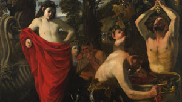

Pintura de Rafael Sanzio que simboliza la filosofía
Fresco de Miguel Ángel en la Capilla Sixtina
Pintura de Sandro Botticelli para la familia Médici

Cuadro realizado por el pintor Sandro Botticelli

Obra maestra del pintor Diego Velázquez
Cuadro de Pier Francesco Mola
Obra de Caravaggio centrada en el terror

Óleo sobre lienzo de Caravaggio